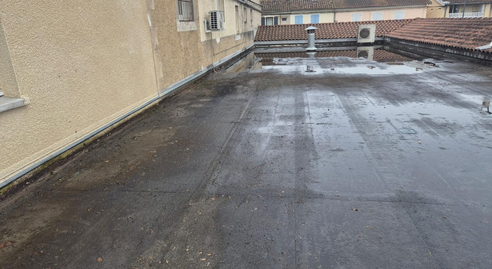
Auch · commerces et particuliers · tout le Gers
Toit-terrasse et toit plat dans le Gers.
Nettoyage de membrane, évacuations, puits de jour et dômes : un chantier organisé pour que votre commerce ou votre maison continue de vivre en dessous.
Photo de chantier : toiture-terrasse d’une boulangerie à Auch.
Couvreur dans le Gers Toit-terrasse et toit plat
Un toit plat ne pardonne pas l’eau qui stagne.
Sur une toiture-terrasse, l’eau doit partir vers l’évacuation. Quand elle reste, la mousse s’installe, la membrane vieillit, et la fuite finit toujours par arriver dans le local en dessous.
- Membrane bitumineuse nettoyée sans être abîmée
- Puits de jour et dômes remplacés et raccordés
- Chantier calé autour de votre activité
- Toit plat, bac acier, particuliers et professionnels
Faire voir mon toit plat
Quatre champs, une minute. Warren vous rappelle lui-même pour caler le diagnostic, gratuit.
Sur un toit plat, l’eau qui reste finit par entrer.
Une toiture-terrasse n’a pas de pente pour se défendre. Elle tient tant que l’eau part ; dès qu’elle stagne, le compte à rebours commence.
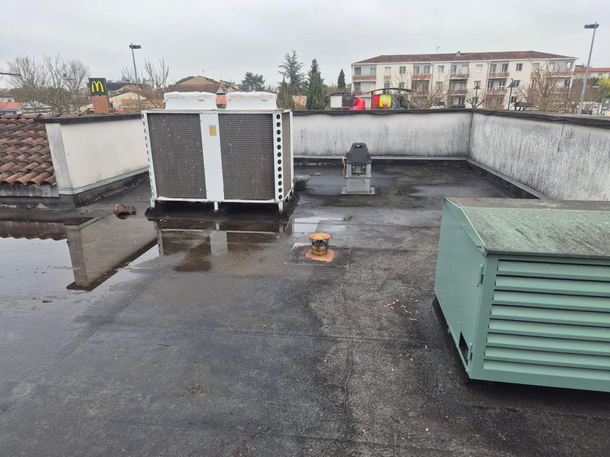
L’eau stagne
Une pente trop faible ou une évacuation encombrée, et l’eau reste en flaque. La membrane, faite pour être mouillée, n’est pas faite pour rester immergée.
La mousse s’installe
Dans les zones humides, la végétation pousse et retient encore plus d’eau. Ses racines attaquent les joints de la membrane.
Les relevés lâchent
C’est aux angles, autour des puits de jour et des équipements que l’étanchéité cède en premier.
Le local en dessous trinque
Une fuite de toit plat se découvre au plafond d’un commerce, d’un bureau ou d’une chambre. Et elle arrête l’activité.
Diagnostiquer, nettoyer, remettre étanche.
Sur un toit plat, il préfère adapter sa méthode à l’existant plutôt que de proposer une réfection complète quand elle n’est pas nécessaire.
- 01
Diagnostic
Membrane, relevés, évacuations, zones d’eau stagnante, équipements : tout est regardé et photographié.
- 02
Organisation
Le chantier se cale sur votre activité. Les équipements (climatisation, extracteurs) sont protégés.
- 03
Nettoyage
Démoussage et nettoyage de la membrane sans l’agresser, évacuations dégagées.
- 04
Étanchéité
Puits de jour ou dôme remplacé, raccords et relevés repris, contrôle final sous l’eau.
Compris à chaque intervention
- Diagnostic et devis gratuits
- Protection des équipements en toiture
- Nettoyage et démoussage de la membrane
- Évacuations dégagées
- Raccords et relevés vérifiés
- Photos avant et après
Ses chantiers, pas une banque d’images.
Mirande, Auch, et ailleurs dans le Gers : les photos que Warren prend lui-même sur ses chantiers, maisons comme commerces.
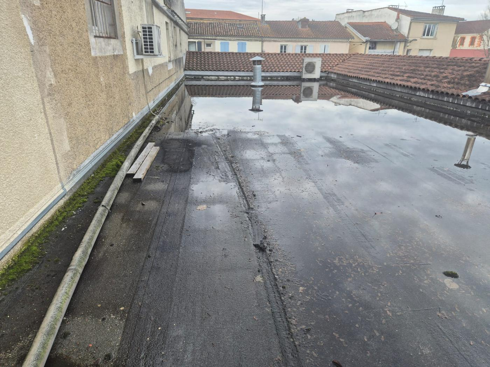
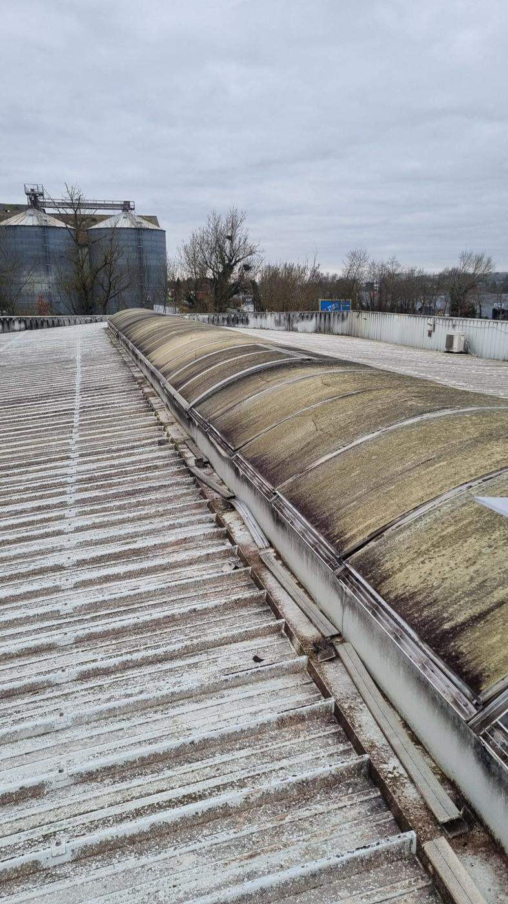
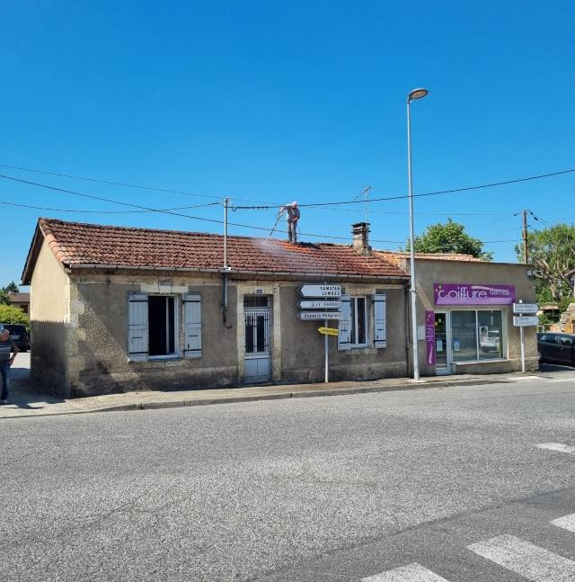
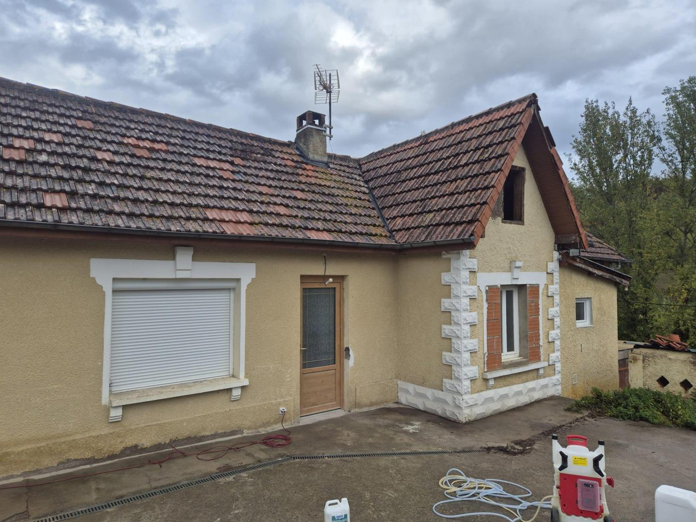
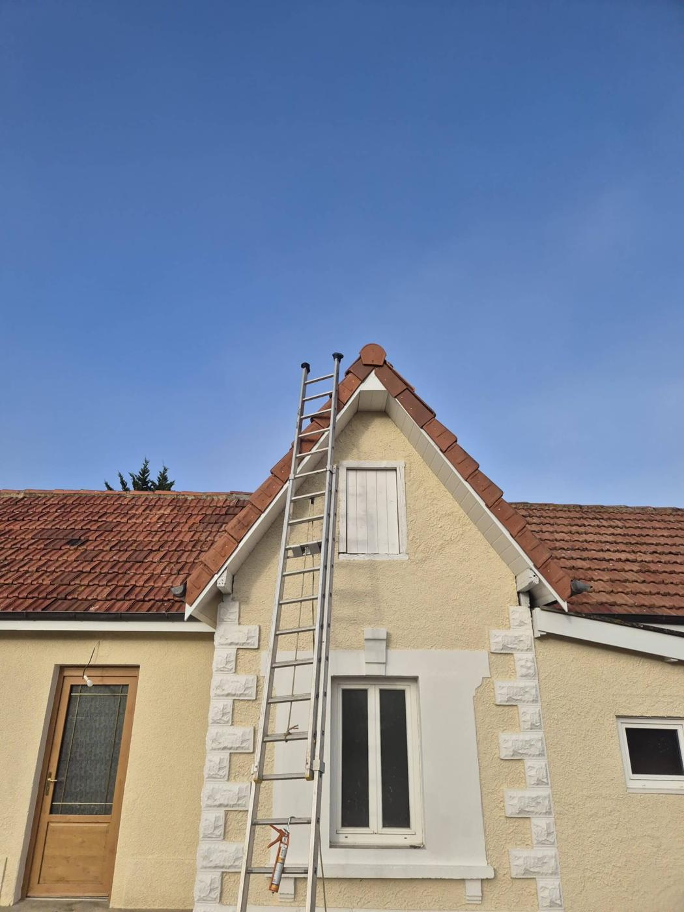
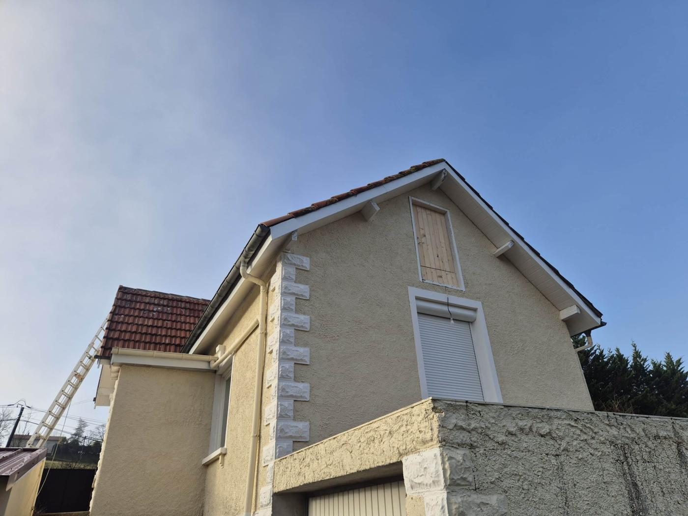
Le même toit, à Auch, avant et après.
Boulangerie d’Auch : toiture-terrasse qui retenait l’eau, puits de jour à remplacer, et un commerce qui ne pouvait pas fermer. Voilà le résultat.
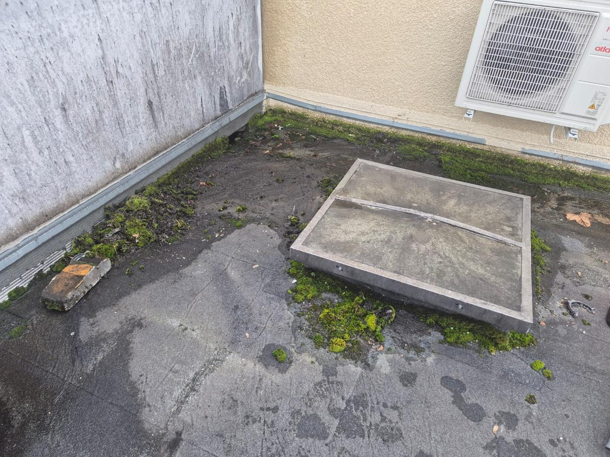
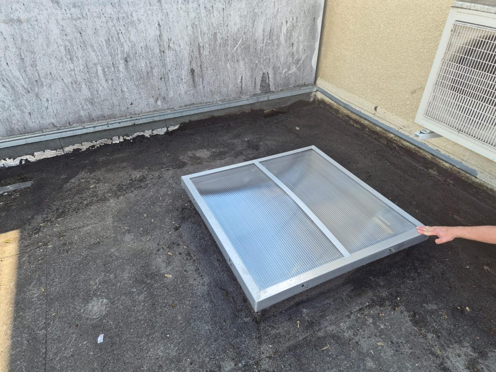
Photos réelles du chantier, prises par l’artisan à Auch.
Combien coûte l’entretien d’un toit plat ?
Un toit-terrasse se chiffre sur place : la surface, l’encrassement, les équipements à protéger et l’état de la membrane décident de tout.
Démoussage de la membrane, évacuations dégagées, contrôle des relevés.
Dépose de l’ancien, pose du neuf, raccords d’étanchéité repris.
Le chiffrage est gratuit, remis après diagnostic, détaillé poste par poste. Rien ne s’ajoute en cours de chantier sans votre accord.
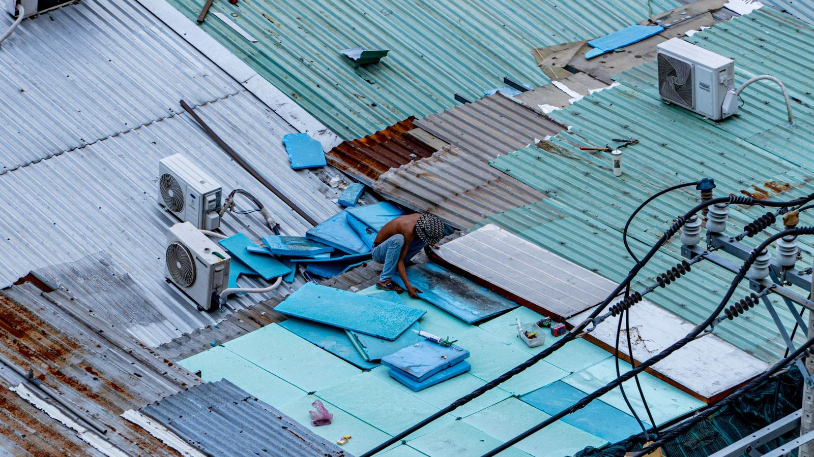
Commerce, bureau, atelier : le chantier se cale sur vous.
L’activité continue en dessous. Les horaires, les accès et les équipements sont pris en compte dès le devis.
Ce que disent ses clients.
Ce qu’il ne fait pas :
Tout le Gers, depuis Mouchès.
L’atelier est à Mouchès, entre Auch et Mirande : le centre du département est à moins d’une demi-heure. La Haute-Garonne et les Pyrénées-Atlantiques se font aussi, sur demande.
- Auch
- Mirande
- Vic-Fezensac
- Masseube
- Marciac
- Seissan
- Fleurance
- L’Isle-Jourdain
- Condom
- Gimont
- Lectoure
- Eauze
- Marciac
- Samatan
- Lombez
- Nogaro
- Riscle
- Montesquiou
- Pavie
- Barran
- Castelnau-Barbarens
- Saint-Jean-le-Comtal
- Montréal
- Plaisance
- Mauvezin
Votre commune n’est pas dans la liste ? Un appel suffit pour savoir si le déplacement est possible.
Vous vous demandez…
Une question qui n’est pas là ? Vous aurez l’artisan au bout du fil, pas un commercial.
06 16 95 49 47Mon toit plat garde de l’eau après la pluie, est-ce grave ?
Pouvez-vous intervenir sans fermer mon commerce ?
Remplacez-vous les puits de jour et les dômes ?
Faut-il refaire toute l’étanchéité ?
Intervenez-vous sur le bac acier ?
À quelle fréquence entretenir un toit-terrasse ?
Travaillez-vous pour les particuliers aussi ?
Un toit plat qui garde l’eau ? Faites-le voir.
Décrivez le bâtiment et ce que vous constatez : il vous rappelle, passe faire le diagnostic, et vous remet un devis clair.
- Un rappelDans la journée, par Warren lui-même.
- Un diagnosticSur le toit, gratuit, photos à l’appui.
- Un devis écritPoste par poste, sans travaux superflus.
- Vous décidezRien n’est engagé tant que rien n’est signé.
Atelier : Los Beasos, 32300 Mouchès
Demander mon devis
Quatre champs, un rappel dans la journée.